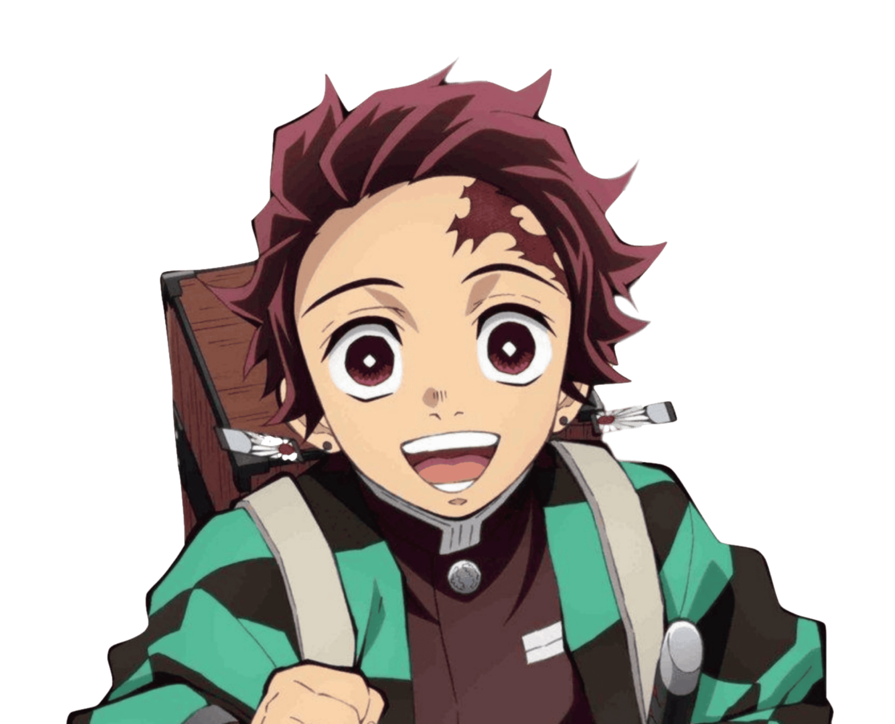
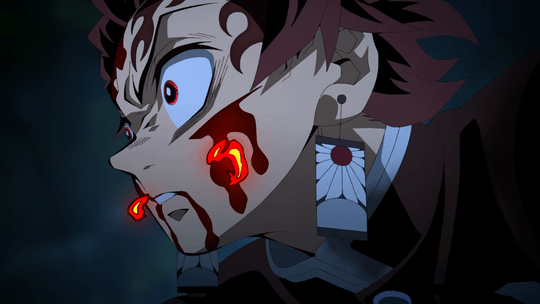
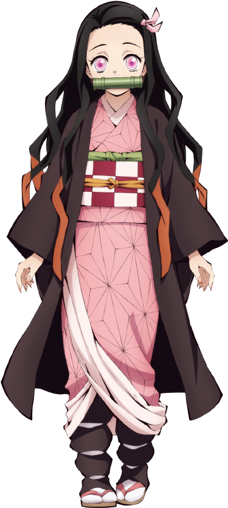
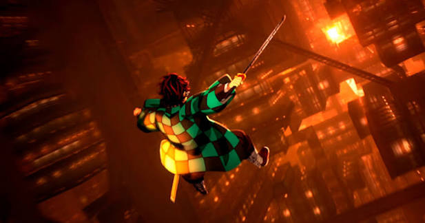
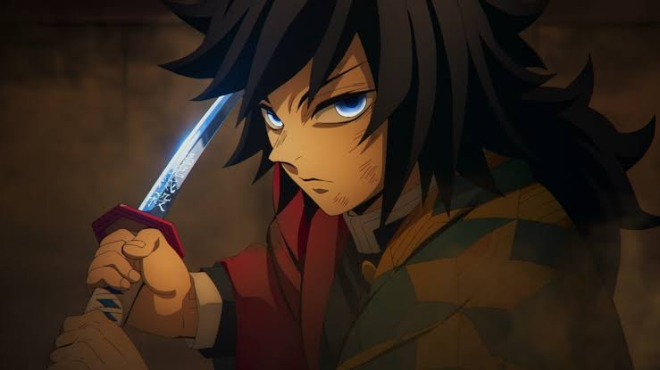
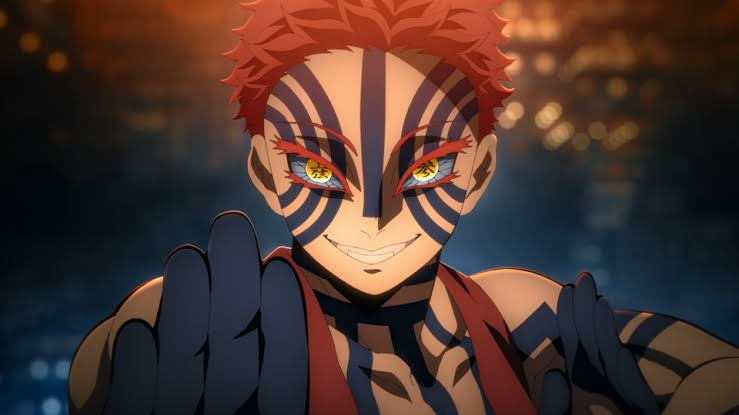

Kimetsu no Yaiba: Castelo Infinito
Ano: 2026
Classificação indicativa: 18
Nota: 8.8
Streaming: Crunchyroll



Sinopse
Com o líder do Esquadrão de Caçadores em perigo, Tanjiro e os Hashira vão até sua base, mas são sugados em uma descida profunda para um espaço misterioso, graças a Muzan Kibutsuji. O destino onde Tanjiro e os Caçadores caem é a fortaleza dos Oni, o Castelo Infinito. E então, o campo de batalha está formado para dar início a luta final entre o Esquadrão de Caçadores e os Oni.
Characaters

Tanjiro Kamado

Tomioka

Akaza